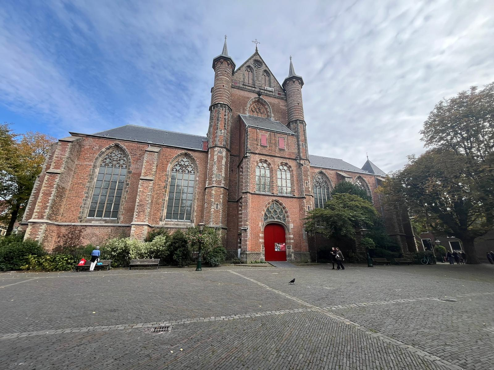
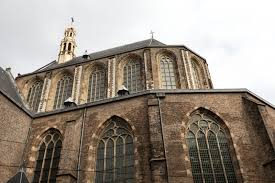

Pieterskerk
Pieterskerk, located in the heart of Leiden, Netherlands, is a historic Protestant church renowned for its stunning Gothic architecture and rich heritage. Dating back to the 14th century, it features intricate stained glass windows and a beautifully crafted wooden ceiling. The church is notable for its significant events, including the burials of prominent figures like the artist Johannes Vermeer. Today, Pieterskerk remains an active place of worship, hosting regular services and community events, while also welcoming visitors for guided tours. With its impressive organ and picturesque bell tower, Pieterskerk is a cultural gem in Leiden, easily accessible for those wishing to explore its history and beauty. For more information, you can visit their official website.
Jacobuskerk
St. James' Church (Jacobuskerk) in Leiden is a beautiful medieval church with a rich history that dates back to the 14th century. Known for its stunning brick architecture and intricate detailing, the church features a striking façade and a tall bell tower that dominates the skyline. Inside, visitors are greeted by an array of impressive artwork, including beautiful stained glass windows and a remarkable organ dating back to the 18th century. The church has served various functions throughout its history, including a place of worship and a site for important community events. Its tranquil atmosphere and historic significance make St. James' Church a cherished landmark in Leiden, reflecting the city's cultural heritage and architectural beauty. The church is also an important center for local activities and continues to attract visitors interested in its art, history, and spiritual heritage.
Oude Kerk
The Old Church (Oude Kerk) in Leiden, built in the 13th century, is one of the city's oldest and most significant landmarks. Renowned for its stunning Gothic architecture, the church features a striking wooden ceiling adorned with intricate beams, which creates a warm and inviting atmosphere. The church’s tower, which rises prominently above the surrounding buildings, offers breathtaking views of the city and its canals. Inside, visitors can admire beautiful stained glass windows and a collection of historic tombstones, including those of notable figures from Leiden's past. The Old Church has played a vital role in the community, hosting numerous important events and serving as a symbol of the city's rich cultural heritage. Its serene ambiance and historical significance make it a must-visit destination for anyone exploring Leiden.